Converters¶
This page describes the general conversion process, the expected inputs and generated outputs, and provides examples of usage.
Overview¶
Qualcomm® AI Engine Direct currently supports converters for four frameworks: Tensorflow, TFLite, PyTorch, and Onnx. Each converter, at a minimum, requires the original framework model as input to generate a Qualcomm® AI Engine Direct Model. For additional required inputs please refer to the framework specific sections below.
The flow for each converter is the same:
Converter Workflow
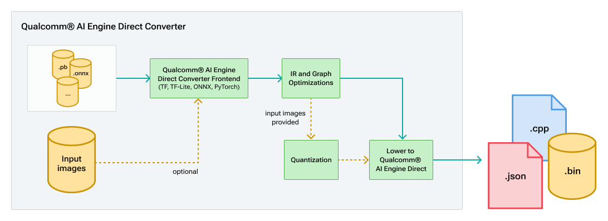
There are four main parts to each converter:
The front end translation which handles converting the original framework model into the common intermediate represention (IR)
The common IR code which contains graph and IR operation definitions as well as various graph optimizations that can be applied to translated graphs.
Quantizer, which is optionally invoked to quantize the model prior to the final lowering to QNN. See Quantization for more information.
The Qnn converter backend which is responsible for lowering the IR into the final QnnModel API calls.
All the converters share the same IR code and QNN converter backend. The output for each converter is the same,
a model.cpp or model.cpp/model.bin which contains the final converted QNN graph. The converted model.cpp contains two functions: QnnModel_composeGraphs and QnnModel_freeGraphsInfo. These two functions leverage the
Tools Utility API described below. Additionally, model_net.json is saved which is a json format variant to model.cpp.
QNN Model JSON Format
Note
All QNN enum/macro values are resolved in fields.
All input/output tensors are stored in “tensors” config section and the tensor names are later used for defining a node inputs/outputs. The only tensor defined in the node config is a tensor parameter.
Static input tensor data is not stored in the JSON.
{
"model.cpp": "<CPP filename goes here>",
"model.bin": "<BIN filename goes here if applicable else NA>",
"coverter_command": "<command line used goes here>",
"copyright_str": "<copyright str goes here if applicable else "">",
"op_types": ["list of unique op types found in graph"]
"Total parameters": "total parameter count in graph ( value in MB assuming single precision float)",
"Total MACs per inference": "total multiply and accumulates in graph count in M),
"graph": {
"tensors": {
"<tensor_name>: {
"id": <generated_id>,
"type": <tensor_type>,
"dataFormat": <tensor_memory_layout>,
"data_type": <tensor_data_type>,
"quant_params": {
"definition": <enum_value>,
"encoding": <enum_value>,
"scale_offset": {
"offset": <val>,
"scale": <val>
}
}
"current_dims": <list_val>,
"max_dims": <list_val>,
"params_count": <val> ("parameter count for node, along with value/total percentage. (only where applicable)")
},
"<tensor_name_with_axis_scale_offset_variant>: {
"id": <generated_id>,
"type": <tensor_type>,
"dataFormat": <tensor_memory_layout>,
"data_type": <tensor_data_type>,
"quant_params": {
"definition": <enum_value>,
"encoding": <enum_value>,
"axis_scale_offset": {
"axis": <val>,
"num_scale_offsets": <val>,
"scale_offsets": [
{
"scale": <val>,
"offset": <val>
},
...
]
}
}
"current_dims": <list_val>,
"max_dims": <list_val>
},
...
}
"nodes": {
"<node_name>: {
"package": <str_val>,
"type": <str_val>,
"tensor_params": {
"<param_name>": {
"<tensor_name_*>: {
"id": <generated_id>,
"type": <tensor_type>,
"dataFormat": <tensor_memory_layout>,
"data_type": <tensor_data_type>,
"quant_params": {
"definition": <enum_value>,
"encoding": <enum_value>,
"scale_offset": {
"offset": <val>,
"scale": <val>
}
"current_dims": <list_val>,
"max_dims": <list_val>,
"data": <list_val>
}
}
...
},
"scalar_params": {
"param_name": {
"param_data_type": <val>
}
...
},
"input_names": <list_str_val>,
"output_names": <list_str_val>,
"macs_per_inference": <val> ("multiply and accumulate value for node, along with value/total percentage. (only where applicable)")
}
...
}
}
}
Tools Utility API¶
The tools Utility API contains helper modules to generate QNN API calls. The APIs are light-weight wrappers on-top of the core QNN API and are intended to mitigate repetitive steps for creating QNN graphs.
Tools Utility C++ API:
QNN Core C API Reference: general/api:C
QNN Model Classes
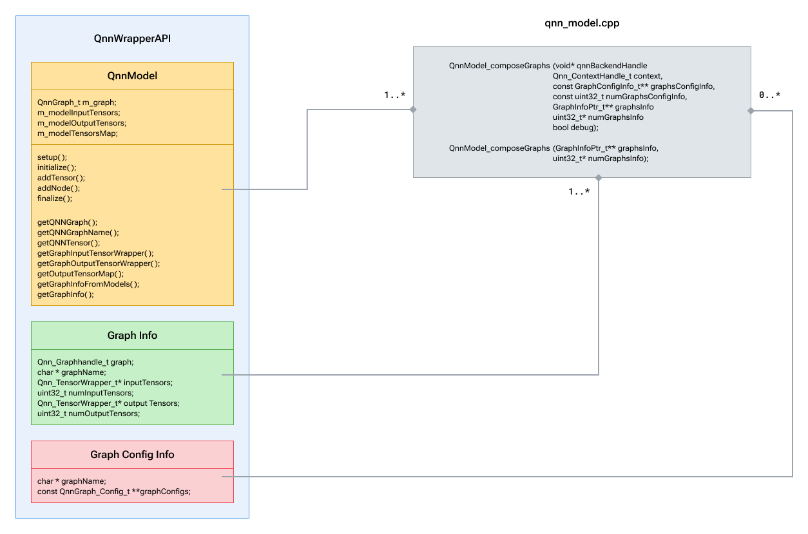
QnnModel: This class is analogous to a QnnGraph and its tensors inside a given context. The context shall be provided at initialization and a new QnnGraph will be created within it. For more details on these class APIs please see QnnModel.hpp, QnnWrapperUtils.hpp
GraphConfigInfo: This structure is used to pass a list of QNN graph configurations(if applicable) from the client. Refer to QnnGraph API for details on available graph config options.
GraphInfo: This structure is used to communicate constructed graph along with its input and output tensors to the client.
QnnModel_composeGraphs: is responsible for constructing QNN graph on the provided QNN backend using the QnnModel class. It will return the constructed graph via graphsInfo.QnnModel_freeGraphsInfo: should only be called once the graph is no longer being used.
For more information on integrating the model into an application see general/overview:Integration Workflow
Tensorflow Conversion¶
QNN, like many other neural network runtime engines, supports both low level operations (like an elementwise multiply) as well as high level operations (like Prelu). TensorFlow on the other hand, generally supports high level operations by representing them as subgraphs of low level operations. To reconcile these differences the converter must sometimes pattern match subgraphs of small operations into larger “layer-like” operations that can be leveraged in QNN.
Pattern Matching¶
The following are a few examples of pattern matching that occurs in the QNN Tensorflow converter. In each case the pattern generally consists of any operations that fall in between the layer input and output, with additional parameters like weights and biases being absorbed into the final IR op.
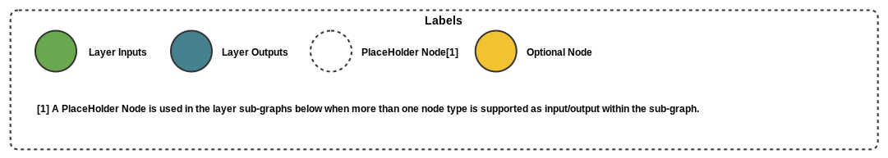
Convolution example:
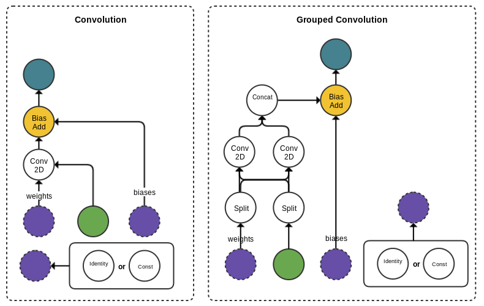
Prelu example:
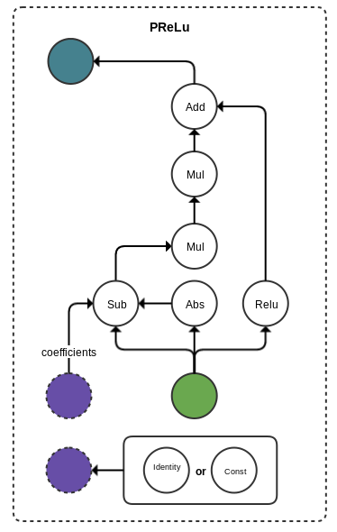
The important thing to remember is that these patterns are hard coded in the converter. Changes to the model that affect the connectivity and order of the operations in these patterns is also likely to break the conversion as the converter will not be able to identify and map the subgraph to the appropriate layer.
The TF converter also supports propagating quantization aware trained (QAT) model parameters to the final QNN model. This happens automatically during conversion when quantization is invoked. Note that the placement of quantization nodes also determines whether or not they will be propagated. Inserting quantization nodes inside a pattern will cause the pattern matching to break and conversion to fail. The safe place to insert nodes is after “layer-like” layers to capture activation information for a layer. In addition, quantization nodes inserted after weights and biases can capture the quantization information for static parameters.
An example of inserting a quantization node after a Convolution:
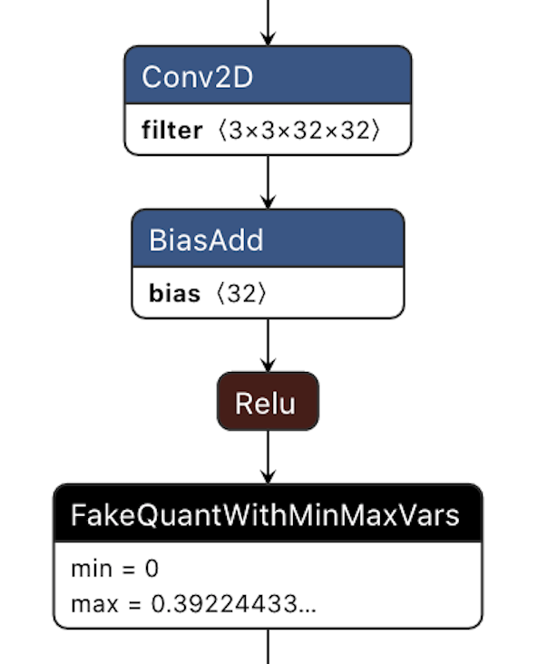
See Quantization for more information on initiating quantization as part of the conversion process.
Additional Required Parameters¶
As Tensorflow graphs often include extraneous nodes that are not required for general inference it is required that the input nodes and dimensions be provided along with the final output nodes required for inference. The converter will then prune unnecessary nodes from the graph ensuring a more compact and efficient graph.
To specify graph’s inputs to the converter pass the following on the command line:
--input_dim <input_name> <comma separated dims>
To specify the graph’s output nodes simply pass:
--out_node <output_name>
Tensorflow also has multiple input formats, but only frozen graphs (.pb files) or .meta files are supported. Saved training sessions are not supported by the converter.
Notes on Tensorflow 2.x Support¶
The qnn-tensorflow-converter has been updated to support conversion of Tensorflow 2.3 models. Note that while some TF 1.x models may convert using Tensorflow 2.3 as the conversion framework it is generally recommended to use the same TF version for conversion as was used for training the model. Some older 1.x models may not convert at all using TF 2.3 and a TF 1.x instance may be required for successful conversion.
Note that some options have been updated or added to support Tensorflow 2.x models. The first is a change to support the SavedModel format. Users can provide the directory to the SavedModel files by passing it to the same input_network option:
--input_network <SavedModel path>
Users can optionally pass saved_model_tag to indicate the tag and associated MetaGraph from the SavedModel. Default is “serve”
--saved_model_tag <tag>
Lastly a user can select the input and output of the model by using the signature key. Default value is ‘serving default’
--saved_model_signature_key <signature_key>
Example¶
The following is an example of an SSD model which requires one image input, but has 4 output nodes.
qnn-tensorflow-converter --input_network frozen_graph.pb --input_dim Preprocessor/sub 1,300,300,3 --output_path ssd_model.cpp --out_node detection_scores --out_node detection_boxes --out_node detection_classes --out_node Postprocessor/BatchMultiClassNonMaxSuppression/map/TensorArrayStack_2/TensorArrayGatherV3 -p "qti.aisw"
TFLite Conversion¶
The qnn-tflite-converter converts a TFLite model to an equivalent QNN representation. It takes as input a .tflite model.
Additional Required Parameters¶
TFlite converter needs the names and dimensions of the input nodes to be provided at commandline for the conversion. Each input must be passed individually using the same argument.
To specify graph’s inputs to the converter pass the following on the command line:
--input_dim <input_name_1> <comma separated dims> --input_dim <input_name_2> <comma separated dims>
PyTorch Conversion¶
The qnn-pytorch-converter converts a PyTorch model to an equivalent QNN representation. It takes as input a TorchScript model (.pt).
Additional Required Parameters¶
PyTorch converter needs the names and dimensions of the input nodes to be provided at commandline for the conversion. Each input must be passed individually using the same argument.
To specify graph’s inputs to the converter pass the following on the command line:
--input_dim <input_name_1> <comma separated dims> --input_dim <input_name_2> <comma separated dims>
Onnx Conversion¶
The qnn-onnx-converter converts a serialized ONNX model to an equivalent QNN representation. By default, it also runs
onnx-simplifier if available in user environment(see Setup). Additionally, onnx-simplifier is only
run by default if user has not provided quantization overrides/custom ops as the simplification process could possibly
squash layers preventing the custom ops or quantization overrides from being used. If the model contains ONNX functions,
converter always does inlining of function nodes.
Note: If conversion fails, the onnx converter supports an additional option “–dry_run” which will dump detailed
information about unsupported ops and associated parameters. Current ONNX Conversion supports upto ONNX Opset 24.
Supported ONNX Ops¶
For the complete list of ONNX ops supported by the ONNX converters check the supported onnx ops table
Custom Operation Output Shape and Datatype Inference¶
QNN converter requires output shapes and datatypes for all operations to be present in the model for successful conversion. Output shapes and
datatypes for custom operations can be inferred from the model if present in the model or inferred using the framework’s shape inference script.
When the output shapes and datatypes of a custom operation are not present in the model or cannot be inferred from the framework’s shape inference
script, the logic to infer custom operation output shapes and datatypes can be provided to the converter through a shared library compiled with
Convter Op Package Generation. The compiled library can be provided with the
--converter_op_package_lib or -cpl option followed by the absolute path to the compiled library. The converter takes the library,
infers the output shapes and datatypes of the custom operations needed for successful model conversion. Multiple libraries must be comma separated.
Note
--converter_op_package_lib or -cpl is an optional argument and should be used when the output shapes and/or output datatypes for custom operations
are not present in the model or cannot be inferred from the framework’s shape inference script.
Note
When the output datatypes are present in the model and the --converter_op_package_lib with the logic to populate the output datatypes is passed,
output datatypes inferred from the library will be given priority and override the output datatypes inferred from the model.
Example¶
qnn-onnx-converter --input_network model.onnx --converter_op_package_lib libExampleLibrary.so
Note
See Convter Op Package Generation for library generation and compilation instructions.
Custom operation output shape inference is only supported for ONNX and PyTorch converters.
Tensorflow and TFLite converters do not support custom operation output shape inference.
Custom I/O¶
Introduction¶
Custom I/O feature allows users to provide the desired layout and datatype for the inputs and outputs while loading a network. Instead of compiling the network for the inputs and outputs specified in the model, the network is compiled for the inputs and outputs described in custom configuration. This feature is used when the user intends to pre-process (on GPU/CDSP or any other method) or offline process (like allowed by ML commons) the input data and avoid some steps in the input processing. Users can avoid redundant transposes and data-type conversions if they have knowledge of the input pre-processing steps. Similarly, on the post-processing side, if the model output is to be fed to a next stage in a pipeline, the desired format and type can be configured as the output of current stage.
In this section, the term “Model I/O” refers to the input and output datatypes and formats of the original model. The term “Custom I/O” refers to the input and output datatypes and formats desired by the user.
Custom I/O Configuration File¶
Custom I/O can be applied using a configuration yaml file that contains the following fields for each input and output that needs to be modified.
IOName: Name of the input or output present in the model that needs to be loaded as per the custom requirement.
Layout: Layout field (optional) has two sub fields: Model and Custom. Model and Custom fields support valid QNN Layout. Accepted values are: NCDHW, NDHWC, NCHW, NHWC, NFC, NCF, NTF, TNF, NF, NC, F, NONTRIVIAL, where, N = Batch, C = Channels, D = Depth, H = Height, W = Width, F = Feature, T = Time
Model: Specify the layout of the buffer in the original model. This is equivalent to the –input_layout option and both cannot be used together.
Custom: Specify the custom layout desired for the buffer. This field needs to be filled by the user.
Datatype: Datatype field (optional) supports float32, float16 and uint8 datatypes.
QuantParam: QuantParam field (optional) has three sub fields: Type, Scale and Offset.
Type: Set to QNN_DEFINITION_DEFINED (default) if the scale and offset are provided by the user else set to QNN_DEFINITION_UNDEFINED.
Scale: Float value for the scale of the buffer as desired by the user.
Offset: Integer value for the offset as desired by the user.
Example¶
Consider a ONNX model with the original model I/O and custom I/O configuration as shown in the table below:
Input/Output Name |
Model I/O |
Custom I/O |
|---|---|---|
‘input_0’ |
float NCHW |
int8 NHWC |
‘output_0’ |
float NHWC |
float NCHW |
Then, the content of custom I/O configuration yaml file that should be provided is
- IOName: input_0
Layout:
Model: NCHW
Custom: NCHW
Datatype: uint8
QuantParam:
Type:
QNN_DEFINITION_DEFINED
Scale:
0.12
Offset:
2
- IOName: output_0
Layout:
Model: NHWC
Custom: NCHW
Note:
If no change is required for an input or output, it can be skipped in the configuration file.
Datatype can be modified using custom I/O feature only if the model input or output datatype is float, float16, int8 or uint8. For other datatypes, ‘Datatype’ field should be skipped in the configuration file.
Usage¶
The custom IO config YAMl file can be provided using the --custom_io option of qnn-onnx-converter. Sample usage is as follows:
$ ${QNN_SDK_ROOT}/bin/x86_64-linux-clang/qnn-onnx-converter \
--custom_io <path/to/YAML/file> ....
Custom IO Config Template File¶
The Custom IO Configuration file filled with default values can be obtained using the --dump_custom_io_config_template option of qnn-onnx-converter.
$ ${QNN_SDK_ROOT}/bin/x86_64-linux-clang/qnn-onnx-converter \
--input_network ${QNN_SDK_ROOT}/examples/Models/InceptionV3/tensorflow/model.onnx \
--dump_custom_io_config_template <output_folder>/config.yaml
The dumped template file has an entry for each input and output of the model provided. Each field in the template file is filled with the default value obtained from the model for that particular input or output. The template file also has comments describing each field for the user.
Supported Use Cases¶
Layout conversions of the input and output buffers of the model. Valid layout conversions are inter-conversions between:
NCDHW and NDHWC
NHWC and NCHW
NFC and NCF
NTF and TNF
Passing quantized inputs of datatype uint8 or int8 to a non-quantized model. In this case, users must provide the scale and offset for the quantized inputs.
Users can provide custom scale and offset for the inputs and outputs of a quantized model. The scale and offset generated by the quantizer are overrriden by those provided by the user in the YAML file.
The user may use the --input_data_type and --output_data_type options of qnn-net-run to provide float or uint8_t type data to model inputs/outputs. Users may pass and get int8/uint8 data to the model using the native option. By default, qnn-net-run assumes the data to be of type float32 and performs the quantization at input and dequatization at output in case of quantized models.
Limitations¶
Custom IO only supports providing the following datatypes: float32, float16, uint8, int8.
If the user needs to pass quantized inputs (i.e. of type int8 or uint8) to a non-quantized model, the scale and offset must be provided by the user in the YAML file. Not providing the scale and offset in this case would throw an error.
Preserve I/O¶
Introduction¶
Preserve I/O feature allows users to retain the layout and datatype of the inputs and outputs as present in the original ONNX model. This feature allows the user to avoid any pre- or post-processing steps to transform the data to the layout and datatype due to the default behavior of QNN converters at the input and output of the model.
Usage¶
The different ways of using this option are as follows:
The user may choose to preserve layouts and datatypes for all IO tensors by just passing the
--preserve_iooption as follows:
$ ${QNN_SDK_ROOT}/bin/x86_64-linux-clang/qnn-onnx-converter \
--preserve_io ....
The user may choose to preserve the only layout or datatype for all the inputs and outputs of the graph as follows:
$ ${QNN_SDK_ROOT}/bin/x86_64-linux-clang/qnn-onnx-converter \
--preserve_io layout ....
or,
$ ${QNN_SDK_ROOT}/bin/x86_64-linux-clang/qnn-onnx-converter \
--preserve_io datatype....
The user may choose to preserve the layout or datatype for only a few inputs and outputs of the graph as follows:
$ ${QNN_SDK_ROOT}/bin/x86_64-linux-clang/qnn-onnx-converter \
--preserve_io layout <space separated list of names of inputs and outputs of the graph>....
or,
$ ${QNN_SDK_ROOT}/bin/x86_64-linux-clang/qnn-onnx-converter \
--preserve_io datatype <space separated list of names of inputs and outputs of the graph>....
The user can pass a combination of
--preserve_io layoutand--preserve_io datatypeas follows:
$ ${QNN_SDK_ROOT}/bin/x86_64-linux-clang/qnn-onnx-converter \
--preserve_io layout <space separated list of names of inputs and outputs of the graph> \
--preserve_io datatype <space separated list of names of inputs and outputs of the graph> ....
Passing just --preserve_io layout and --preserve_io datatype together is valid and equivalent to passing --preserve_io only.
Usage in point 3 cannot be combined with usage in point 1 or point 2 and will result in an error if used together.
Usage in qnn-pytorch-converter¶
In PyTorch models there may be no tensor names. Input tensor names are named by passing -d, but output names in converter are named by
internal logic. To preserve layout or datatype for only the specified output tensor user can do as follows:
Run a 1st pass of the Converter and use the generated CPP/JSON file to fetch the APP_READ type tensor names.
Run a 2nd Converter for preserve layout or datatype for only the specified IO tensor with their names:
$ ${QNN_SDK_ROOT}/bin/x86_64-linux-clang/qnn-onnx-converter \
--preserve_io layout <space separated list of names of inputs and outputs of the graph>....
or,
$ ${QNN_SDK_ROOT}/bin/x86_64-linux-clang/qnn-onnx-converter \
--preserve_io datatype <space separated list of names of inputs and outputs of the graph>....
Usage with other converter options¶
--keep_int64_inputsneed not be passed if preserve IO is used to preserve the datatype of such inputs.--use_native_input_filesis set to True in case of quantization if preserve IO is used to preserve the datatypes.The layout specified using
--input_layoutis honored.Using
--input_dtypewith preserve IO may result in an error in case of datatype mismatch for any IO tensor.The layouts and datatypes specified using
--custom_ioget higher precedence over--preserve_io.
Since preserve IO retains the datatypes of IO tensors in the original model, the user must use --use_native_input_files or --native_input_tensor_names with qnn-net-run.
Common Parameters¶
There are a number of common parameters that can be passed to all the converters. These are described here: Tools
In addition, quantization parameters are also specified at conversion time. For more information refer to the tools document above and to: Quantization
Qairt Converter¶
The qairt-converter tool converts a model from one of ONNX/TensorFlow/TFLite/PyTorch framework to a DLC.
The DLC contains the model in a Qualcomm graph format to support inference on Qualcomm’s AI accelerator cores.
A new prefix qairt for Qualcomm AI Runtime signifies that this converter can be used with both the Qualcomm Neural Processing SDK API as well as the Qualcomm AI Engine Direct
API. The converter automatically detects the proper framework based on the source model extension.
Supported frameworks and file types are:
Framework |
File Type |
|---|---|
Onnx |
*.onnx |
TensorFlow |
*.pb |
TFLite |
*.tflite |
PyTorch |
*.pt |
Basic Conversion¶
Basic conversion has only one required argument --input_network, which is the path to the source framework model.
The source model can either be float model or quantized model, qairt-converter will convert it to corresponding DLC, retaining the precision and datatype of the tensors.
Some frameworks may require additional arguments that are otherwise listed as optional. Please check the help text at general/tools:qairt-converter for more details.

Onnx Conversion
Current ONNX Conversion supports upto ONNX Opset 24.
$ qairt-converter --input_network model.onnx
Tensorflow Conversion
Tensorflow additionally requires --source_model_input_shape and --out_tensor_node arguments.
--source_model_input_shape is for specifying the list of all the input names and dimensions to the network model.
--out_tensor_node is for specifying the network model’s output tensor name/s.
$ qairt-converter \ --input_network inception_v3_2016_08_28_frozen.pb \ --source_model_input_shape input 1,299,299,3 \ --out_tensor_node InceptionV3/Predictions/Reshape_1
In the above example, the model inception_v3_2016_08_28_frozen.pb has input named input with dimensions (1,299,299,3), and output tensor with
name InceptionV3/Predictions/Reshape_1.
Input/Output Layouts¶
The default input and output layouts in the converted graph are the same as per the source model. This behavior differs from the legacy converter which would modify the input and (optionally) the output layout to the spatial first format. An example single layer Onnx model (spatial last) is shown below.
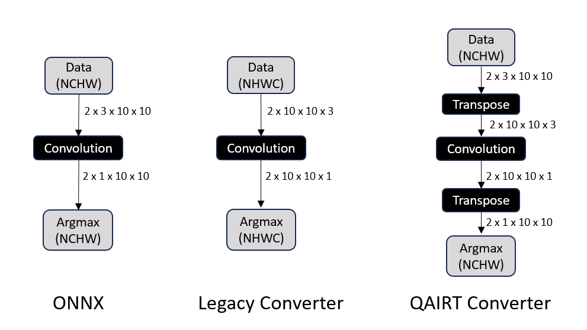
Input/Output Customization using YAML¶
Note
This feature allows user to specify their desired input/output tensor layout for the converted model.
Users can provide a YAML configuration file to simplify using different input and output configurations using the --config command-line option.
All configurations in the YAML are optional. If an option is provided in the YAML configuration and an equivalent
option is provided on the command line, the command line option takes precedence over the one provided in the configuration file.
The YAML configuration schema is shown below.
Name:Name of the input or output tensor present in the model that needs to be customizedSrc Model ParametersThese are mandatory if a certain equivalent desired configuration is specified.
DataType:Data type of the tensor in source model.Layout:Tensor layout in the source model. Valid values are:NCDHW
NDHWC
NCHW
NHWC
NFC
NCF
NTF
TNF
NF
NC
F
where
N = Batch
C = Channels
D = Depth
H = Height
W = Width
F = Feature
T = Time
Desired Model ParametersDataType:Desired data type of the tensor in the converted model. Valid values are float32, float16, uint8, int8 datatypes.Layout:Desired tensor layout of the converted model. Same valid values as source layout.Shape:Tensor shape/dimension in the converted model. Valid values are comma separated dimension values, i.e., (a,b,c,d).Color Conversion:Tensor color encoding in the converted model. Valid values are BGR, RGB, RGBA, ARGB32, NV21, and NV12.QuantParams:Required when the desired model data type is a quantized data type. Has two subfields: Scale and Offset.Scale:Scale of the buffer as a float value.Offset:Offset value as an integer.
Optional:During calls to graph execute, the client can use optional I/O tensors to signal to the backend which tensors to be optionally provided/produced. Valid values are True, False.
The --dump_config_template option of qairt-converter saves the IO configuration file for the user to update.
Pass the --dump_config_template option to the qairt-converter to save the IO configuration file at the specified location.
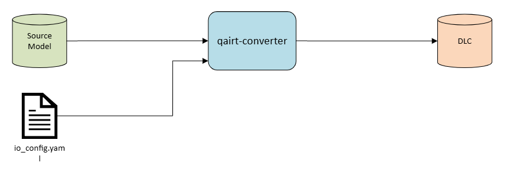
$ qairt-converter \ --input_network model.onnx \ --dump_config_template <output_folder>/io_config.yaml
This is the sample output of the dumped IO configuration file:
Converted Graph: - Input Tensors: - Output Tensors: Input Tensor Configuration: # Input 1 - Name: 'input' Src Model Parameters: DataType: Layout: Shape: Desired Model Parameters: DataType: Layout: Color Conversion: QuantParams: Scale: Offset: Output Tensor Configuration: # Output 1 - Name: 'output' Src Model Parameters: DataType: Layout: Desired Model Parameters: DataType: Layout: QuantParams: Scale: Offset:
Consider a model with the Source model I/O and Desired model I/O configuration as shown in the table below:
Input/Output Name
Source Model I/O
Desired Model I/O
Datatype / Layout
Datatype / Layout
‘input_0’
float32 / NCHW
uint8 / NHWC
‘output_0’
float32 / NCHW
uint8 / NHWC
Here is an example io_config.yaml, where:
Input and output tensor layouts are converted from NCHW format in source model to NHWC format in the converted model.
Also, the datatypes are converted from float32 format in source model to uint8 format in the converted model.
Converted Graph: - Output Tensors: ['output'] Input Tensor Configuration: # Input 1 - Name: 'input' Src Model Parameters: DataType: float32 Layout: NCHW Shape: Desired Model Parameters: DataType: uint8 Layout: NHWC Color Conversion: QuantParams: Scale: Offset: Output Tensor Configuration: # Output 1 - Name: 'output' Src Model Parameters: DataType: float32 Layout: NCHW Desired Model Parameters: DataType: uint8 Layout: NHWC QuantParams: Scale: Offset:$ qairt-converter \ --input_network model.onnx \ --config io_config.yaml
Disconnected Input Preservation¶
In deep learning framework models, computational graphs often contain multiple inputs. During graph optimization,
unused inputs may be removed through techniques like constant folding or dead code elimination. While this improves
performance and reduces memory usage, it can sometimes interfere with workflows that rely on the presence of all
inputs being present in the source framework model — especially in scenarios involving inference.
To address this, qairt-converter retains all the source framework model inputs, ensuring that all graph inputs remain
part of the graph regardless of their usage. This behavior is similar to the other open-source inference engines.
Unused graph input nodes can be removed by using --remove_unused_inputs command line argument while using
qairt-converter.
- Retaining unused or disconnected inputs provides the following benefits:
Avoid unintended side effects during model conversion.
Facilitate debugging and analysis by retaining all original inputs.
The following figure shows a source graph (left) with two inputs i1 and i2. The input i2 is disconnected post conversion, but it is preserved in the converter graph.

QAT encodings¶
QAT encodings are quantization-aware training encodings which are present in the source network model. They can be present in the following form in the source network model.
FakeQuant Nodes: There can be FakeQuant nodes in the source network model. This nodes simulate the quantize-dequantize operations and use parameters like scale and zero-points to map the floating point values to quantized values and back. During conversion this nodes will be removed and corresponding encodings are applied to generate a quantized or mixed precision DLC output.
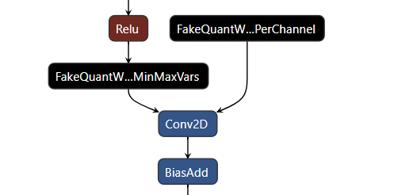
Quantization overrides: Tensor output encodings can be associated with the output tensors in the source network model via overrides. The quantization overrides for the tensors(output, weights, bias, activations) in the source network model can be provided to the
qairt-converterwith a JSON file using the--quantization_overridescommand-line option. When the overrides option is specified,qairt-converterproduces a fully quantized or mixed precision graph depending on the overrides by applying encoding overrides, propagate encodings across data invariant Ops and fallback the missing tensors in float datatype.Quant-Dequant Nodes: There can be Quant-Dequant(QDQ) nodes present in the source network model. The Quant nodes convert floating-point values to lower precision values typically integers to reduce model’s memory footprint and improving inference time. The Dequant do the opposite and convert from lower precision values to floating-point values for getting higher precision for certain operations. During conversion this nodes will be removed and corresponding encodings are applied to generate a quantized or mixed precision DLC output.

Note
Inference fails for CPU and DSP runtimes if QAT encodings contain 16-bit.
Float model Usecases¶
Float bitwidth conversions
Users can convert float source model between float bitwidth 16 and 32 using the
--float_bitwidthflag to theqairt-convertertool.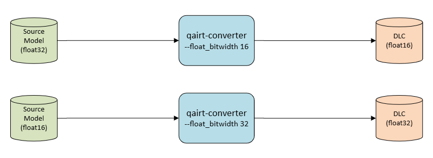
For converting a source model with all float32 tensors to float16 tensor use
--float_bitwidth 16.Note
Float bitwidth 32 is the default bitwidth for float source model conversion.
Float bitwidth 16 is the default bitwidth for source model with quantization encodings or overrides
$ qairt-converter --input_network model.onnx \ --float_bitwidth 16For converting a source model with all float16 tensors to float32 tensor use
--float_bitwidth 32.$ qairt-converter --input_network model.onnx \ --float_bitwidth 32Float16 Conversion with Float32 bias
To generate a float16 graph with the bias still in float32, an additional
--float_bias_bitwidth 32flag can be passed.$ qairt-converter --input_network model.onnx \ --float_bitwidth 16 \ --float_bias_bitwidth 32
Quantization overrides Usecases¶
Float mixed precision conversion
User can provide overrides to
qairt-converterto floating point source model to a mixed float precision (float16 and float32) model. For example, if the source model has all tensors with float32 precision and user wants to change precision of some tensors to float16, override file should contain names of the tensor with type as float16.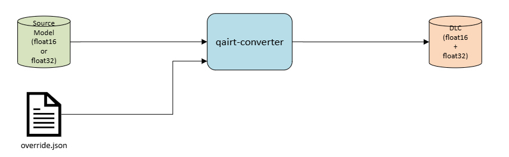
$ qairt-converter \ --input_network model.onnx \ --quantization_overrides <path to json>/overrides.jsonQuant conversion
User can also convert a float source model or mixed precision source model to a quantized model using quantization overrides. The
qairt-converterwill generate a fully quantized or mixed precision graph based on the overrides provided. $ qairt-converter \ --input_network model.onnx \ --quantization_overrides <path to json>/overrides.json
$ qairt-converter \ --input_network model.onnx \ --quantization_overrides <path to json>/overrides.jsonOverrides to Float conversion
User can convert a source model with overrides to float to run on floating point runtimes i.e. QNN-GPU and QNN-CPU using the command-line option
--export_format=DLC_STRIP_QUANT.Note
This might result in loss of accuracy.

$ qairt-converter \ --input_network model.onnx \ --quantization_overrides <path to json>/overrides.json \ --export_format=DLC_STRIP_QUANT
Quantized model Usecases¶
Quant model conversion
User can now convert a quantized model in a single step using the
qairt-converterwithout any additional steps.
$ qairt-converter \ --input_network quant_model.onnxQuant to Float conversion
User can convert a quantized source model to float to run on floating point runtimes i.e. QNN-GPU and QNN-CPU using the command-line option
--export_format=DLC_STRIP_QUANT.Note
This might result in loss of accuracy.

$ qairt-converter --input_network quant_model.onnx \ --export_format=DLC_STRIP_QUANT
Quant-Dequant(QDQ) model Usecases¶
QDQ model conversion
User can now convert a Quant-Dequant source model to quantized model in a single step using the
qairt-converterwithout any additional steps.
$ qairt-converter \ --input_network quant_dequant_model.onnxQDQ to Float conversion
User can convert a Quant-Dequant source model to float to run on floating point runtimes i.e. QNN-GPU and QNN-CPU using the command-line option
--export_format=DLC_STRIP_QUANT.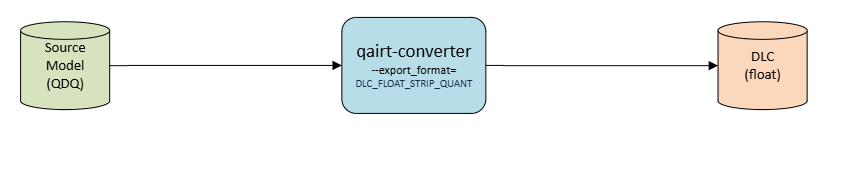
Note
This might result in loss of accuracy.
$ qairt-converter --input_network model.onnx \ --export_format=DLC_STRIP_QUANT
BF16 Graph generation use cases¶
What is BFloat16?
Bfloat16 (Brain Floating Point 16) is a 16-bit floating-point format designed by Google Brain to accelerate machine learning workloads. It uses the same 8-bit exponent as standard 32-bit floats but only 7 bits for the mantissa, making it efficient for deep learning without losing much numerical range. Below table illustrates the difference between FP32, FP16 and BF16 data types. BF16 has the same range as FP32 but with reduced precision.
Format |
Exponent bits |
Mantissa bits |
Characteristics |
|---|---|---|---|
FP32 |
8 |
23 |
Highest precision, wide range, 4 bytes |
FP16 |
5 |
10 |
Medium precision, limited range, 2 bytes |
BF16 |
8 |
7 |
Lower precision, wide range, 2 bytes |
Generating BF16 graph using QNN and QAIRT converter
We can generate BF16 graph by passing the argument
--float_bitwidth bf16in QNN and QAIRT converters.Examples of BF16 graph generation
$ qnn-onnx-converter -i model.onnx --float_bitwidth bf16 # Generates BF16 CPP graph$ qairt-converter -i model.onnx --float_bitwidth bf16 # Generates BF16 DLC
Support for BF16 Graph generation through QNN and QAIRT Tools¶
BF16 graph generation is supported through QNN and QAIRT for conversion of ONNX models without QDQ nodes or overrides.
Quantization isn’t supported for BF16 graphs.
Other frameworks like PyTorch, TensorFlow, TfLite, etc. don’t support BF16 datatype.
FAQs¶
How is QAIRT Converter different from Legacy Converters?
Single converter vs independent framework converters
The qairt-converter is a single converter tool supporting conversion for all supported frameworks based on the model extension while legacy converters had different framework specific tools.
Changed some optional arguments as default behavior
The default input and output layouts in the Converted graph will be same as in the Source graph. The legacy ONNX and Pytorch converters may not always retain the input and output layouts from Source graph.
Removed deprecated arguments
Deprecated arguments on the legacy converters are not enabled on the new converter.
Renamed some arguments for clarity
The –input_encoding argument is renamed to –input_color_encoding. Framework-specific arguments have the framework name present. eg- –define_symbol is renamed to –onnx_define_symbol, –show_unconsumed_nodes is renamed to –tf_show_unconsumed_nodes, –signature_name is renamed to –tflite_signature_name.
DLC as the Converter output file format
The QAIRT Converter uses DLC as output format. The .cpp/.bin & .json format used by
qnn-<framework>-converterConverter are not supported by QAIRT Converter. In order to generate the .cpp/.bin and .json output, continue to use the legacy converter.HTP as Default Backend in QAIRT vs Legacy Converters
HTP is set as the default backend in the QAIRT converter, which may enable certain HTP-specific behaviors that wouldn’t be triggered by default in legacy converters where the backend is left empty. This difference can affect how some backend-dependent features behave during conversion/quantization.
For example, during quantization, an optimization called
IntBiasUpdatesis applied to the FullyConnected op if the backend is set toHTPin SNPE, whereas it is always applied in QAIRT.
Quantizer functionality is separated from Conversion functionality
qnn-<framework>-converterinvokes the quantizer as part of the converter tool when--input_listor--float_fallbackis passed.qairt-quantizerhowever is a standalone tool for quantization likesnpe-dlc-quant.Please refer to qairt-quantizer for more information and usage details.
QAIRT Converter preserves the original output order from ONNX models, while legacy converters may reorder outputs.
To maintain output order in the legacy converter (
qnn-onnx-converter), use the--preserve_onnx_output_orderflag.Will the Converted model be any different with QAIRT converter compared to Legacy Converter?
The result of the QAIRT Converter will be different from the result of Legacy Converters in terms of the input/output layout.
Legacy converters will by default modify the input tensors to Spatial First (e.g. NHWC) layout. This means for Frameworks like ONNX, where the predominant layout is Spatial Last (e.g. NCHW), the input/output layout is different between the source model and the converted model.
Since QAIRT Converter preserves the source layouts be default, the QAIRT-converted graphs in case of many ONNX/Pytorch models will be different from the Legacy-converted graphs.
QAIRT Converter preserves the original output order from ONNX models.